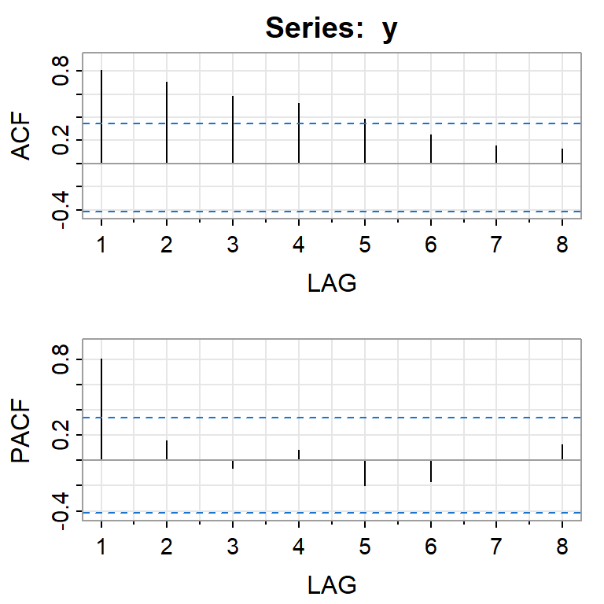

![]()
library(ggplot2)
library(forecast)
library(fpp2)
library(astsa)
library(car)
library(TSA)
library(tseries)
library(urca)
library(dplyr)Tema VI: Modelos ARIMA de Box&Jenkins - Lab 1
1 librerías
2 Modelo AR(1)
2.1 Funciones para simular un AR(1)
set.seed(1000)
gen_ar1a <- function(N = 150, phi1 = 0.8, sigma2 = 1) {
a <- rnorm(N,0,sigma2)
y <- as.numeric(0)
y[1] <- a[1]
for(i in 2:N){
y[i] <- phi1*y[i-1]+a[i]
}
return(y)
}
gen_ar1b <- function(N = 150, C=0, phi1 = 0.8, sigma2 = 1) {
NN <- 1000
a <- rnorm(NN+N,0,sigma2)
y <- as.numeric(0)
y[1] <- a[1]
for(i in 2:(NN+N)){
y[i] <- C + phi1*y[i-1] + a[i]
}
return(y[NN:(NN+N)])
}2.2 AR(1)
phi1=0.6
y <- gen_ar1b(N=150,C=5,phi1=phi1,sigma2=1)2.3 Simulación y el análisis descriptivo
# descriptiva
ts.plot(y)
mean(y) #promedio teórico: 5/(1-phi1)[1] 12.29826acf(y,lag.max=30)
pacf(y)
acf2(y) #library(astsa)
[,1] [,2] [,3] [,4] [,5] [,6] [,7] [,8] [,9] [,10] [,11] [,12] [,13]
ACF 0.55 0.37 0.32 0.22 0.15 0.03 -0.01 0.02 0.04 0.06 0.04 -0.05 0.04
PACF 0.55 0.10 0.11 -0.02 -0.01 -0.12 -0.03 0.07 0.05 0.06 -0.02 -0.14 0.10
[,14] [,15] [,16] [,17] [,18] [,19] [,20] [,21] [,22] [,23]
ACF 0.06 0.00 0.10 0.01 -0.01 -0.01 -0.07 -0.08 -0.12 -0.13
PACF 0.03 -0.03 0.16 -0.13 -0.03 -0.04 -0.06 -0.01 -0.02 -0.022.4 Estimación del modelo AR(1)
mod0a <- Arima(y, order=c(1,0,0),method="CSS-ML")
mod0b <- Arima(y, order=c(1,0,0),method="ML")
mod0c <- Arima(y, order=c(1,0,0),method="CSS")
summary(mod0a)Series: y
ARIMA(1,0,0) with non-zero mean
Coefficients:
ar1 mean
0.5458 12.3079
s.e. 0.0677 0.1747
sigma^2 = 0.9791: log likelihood = -211.84
AIC=429.67 AICc=429.84 BIC=438.73
Training set error measures:
ME RMSE MAE MPE MAPE MASE
Training set -0.003583648 0.9829323 0.7777108 -0.7004689 6.441715 0.862108
ACF1
Training set -0.05598464summary(mod0b)Series: y
ARIMA(1,0,0) with non-zero mean
Coefficients:
ar1 mean
0.5458 12.3079
s.e. 0.0677 0.1747
sigma^2 = 0.9791: log likelihood = -211.84
AIC=429.67 AICc=429.84 BIC=438.73
Training set error measures:
ME RMSE MAE MPE MAPE MASE
Training set -0.00358382 0.9829323 0.7777108 -0.7004712 6.441715 0.862108
ACF1
Training set -0.05598279summary(mod0c)Series: y
ARIMA(1,0,0) with non-zero mean
Coefficients:
ar1 mean
0.5478 12.2906
s.e. 0.0680 0.1772
sigma^2 = 0.9763: log likelihood = -211.94
Training set error measures:
ME RMSE MAE MPE MAPE MASE
Training set -9.091757e-07 0.9815181 0.7736897 -0.6675575 6.406619 0.8576505
ACF1
Training set -0.06819174No está estimando el intercepto C, sino la media del proceso.
mean(y)[1] 12.298265/(1-phi1) #media teórica[1] 12.52.5 El paquete tseries
Este paquete permite la estimación del intercepto.
mod0e<-tseries::arma(y,order=c(1,0),include.intercept=TRUE)
summary(mod0e)
Call:
tseries::arma(x = y, order = c(1, 0), include.intercept = TRUE)
Model:
ARMA(1,0)
Residuals:
Min 1Q Median 3Q Max
-2.70023 -0.62982 0.01873 0.59927 2.49800
Coefficient(s):
Estimate Std. Error t value Pr(>|t|)
ar1 0.54778 0.06799 8.056 8.88e-16 ***
intercept 5.55805 0.83982 6.618 3.64e-11 ***
---
Signif. codes: 0 '***' 0.001 '**' 0.01 '*' 0.05 '.' 0.1 ' ' 1
Fit:
sigma^2 estimated as 0.9763, Conditional Sum-of-Squares = 145.47, AIC = 428.92.6 El diagnóstico del modelo AR(1)
#devolvemos al mod0c
res<-mod0c$residuals
ts.plot(res)
acf(res)
pacf(res)
acf2(res)
[,1] [,2] [,3] [,4] [,5] [,6] [,7] [,8] [,9] [,10] [,11] [,12] [,13]
ACF -0.07 0.02 0.12 0.04 0.09 -0.05 -0.07 0.02 0.00 0.05 0.05 -0.15 0.06
PACF -0.07 0.02 0.12 0.06 0.09 -0.05 -0.10 -0.02 0.01 0.08 0.09 -0.14 0.01
[,14] [,15] [,16] [,17] [,18] [,19] [,20] [,21] [,22] [,23]
ACF 0.08 -0.11 0.17 -0.07 0.00 0.04 -0.07 -0.01 -0.05 -0.05
PACF 0.07 -0.09 0.17 -0.02 -0.02 -0.02 -0.07 -0.03 -0.02 -0.01tsdiag(mod0c) #library(stats)
checkresiduals(mod0c,lag=10)
Ljung-Box test
data: Residuals from ARIMA(1,0,0) with non-zero mean
Q* = 6.1954, df = 9, p-value = 0.7202
Model df: 1. Total lags used: 10checkresiduals(mod0c,lag=30)
Ljung-Box test
data: Residuals from ARIMA(1,0,0) with non-zero mean
Q* = 30.38, df = 29, p-value = 0.3952
Model df: 1. Total lags used: 302.7 Normalidad
shapiro.test(res)
Shapiro-Wilk normality test
data: res
W = 0.99372, p-value = 0.7572jarque.bera.test(res)
Jarque Bera Test
data: res
X-squared = 0.34556, df = 2, p-value = 0.8413qqPlot(res)
[1] 98 122.8 Pronóstico
forecast(mod0c) Point Forecast Lo 80 Hi 80 Lo 95 Hi 95
152 12.54741 11.28113 13.81369 10.610804 14.48402
153 12.43127 10.98746 13.87508 10.223155 14.63938
154 12.36765 10.87469 13.86061 10.084359 14.65094
155 12.33280 10.82540 13.84020 10.027432 14.63817
156 12.31371 10.80201 13.82542 10.001760 14.62567
157 12.30326 10.79026 13.81625 9.989332 14.61718
158 12.29753 10.78415 13.81091 9.983013 14.61205
159 12.29439 10.78090 13.80789 9.979699 14.60909
160 12.29267 10.77914 13.80621 9.977927 14.60742
161 12.29173 10.77819 13.80527 9.976969 14.60649autoplot(forecast(mod0c))
2.9 Simulación con arima.sim
#AR(1)
m<-5 #la media del proceso
y1 <- arima.sim(n = 150, model = list(order = c(1,0,0),ar = c(0.8)),sd=3,rand.gen= rnorm) + m
ts.plot(y1)
acf2(y1)
[,1] [,2] [,3] [,4] [,5] [,6] [,7] [,8] [,9] [,10] [,11] [,12] [,13]
ACF 0.79 0.63 0.51 0.33 0.15 0.00 -0.09 -0.17 -0.22 -0.22 -0.20 -0.16 -0.11
PACF 0.79 0.00 0.03 -0.23 -0.14 -0.13 0.08 -0.06 0.02 -0.01 0.04 0.00 0.03
[,14] [,15] [,16] [,17] [,18] [,19] [,20] [,21] [,22] [,23]
ACF -0.07 -0.08 -0.05 0.00 -0.01 -0.04 -0.01 0.00 -0.02 -0.05
PACF -0.07 -0.13 0.06 0.09 -0.08 -0.07 0.06 0.01 -0.01 -0.09mod1<- forecast::Arima(y1, order = c(1, 0, 0))
summary(mod1)Series: y1
ARIMA(1,0,0) with non-zero mean
Coefficients:
ar1 mean
0.7930 5.6271
s.e. 0.0489 1.1244
sigma^2 = 8.644: log likelihood = -374.1
AIC=754.19 AICc=754.36 BIC=763.23
Training set error measures:
ME RMSE MAE MPE MAPE MASE
Training set 0.02229917 2.920453 2.377549 -30.89234 154.6729 0.9571567
ACF1
Training set -0.0014605193 Modelo AR(2)
y2 <- arima.sim(n = 150, model = list(order = c(2,0,0),ar = c(0.6,-0.28)),sd=1,rand.gen= rnorm)
ts.plot(y2)
ar2.st <- arima(y2, c(2, 0, 0), include.mean=FALSE,
transform.pars=FALSE, method="ML")
ar2.st$coef ar1 ar2
0.6302657 -0.2673028 polyroot(c(1, -ar2.st$coef))[1] 1.178936+1.533358i 1.178936-1.533358iMod(polyroot(c(1, -ar2.st$coef)))[1] 1.934186 1.934186root.comp <- Im(polyroot(c(1, -ar2.st$coef)))
root.real <- Re(polyroot(c(1, -ar2.st$coef)))
# Plotting the roots in a unit circle
x <- seq(-1, 1, length = 1000)
y1 <- sqrt(1- x^2)
y2 <- -sqrt(1- x^2)
plot(c(x, x), c(y1, y2), xlab='Parte Real',
ylab='Parte Compleja', type='l',
main='Circulo unitario', ylim=c(-2, 2), xlim=c(-2, 2))
abline(h=0)
abline(v=0)
points(Re(polyroot(c(1, -ar2.st$coef))),
Im(polyroot(c(1, -ar2.st$coef))), pch=19)
legend(-1.5, -1.5, legend="Raíces del AR(2)", pch=19)
#Otra posibilidad es usar el inverso de las raíces.
autoplot(ar2.st)
(raices_lista <- autoplot(ar2.st)[["plot_env"]][["allRoots"]]) roots type Real Imaginary UnitCircle
1 1.178936+1.533358i AR 0.3151328 -0.4098708 Within
2 1.178936-1.533358i AR 0.3151328 0.4098708 Withinraices <- raices_lista %>% filter(type == "AR") %>% select(roots)
modulo.raices <- Mod(raices$roots)
modulo.raices>1[1] TRUE TRUE4 Modelo ARMA(1,1)
y3<-arima.sim(n = 150, list(order = c(1,0,1),ar = c(0.88), ma = c(-0.23)),
sd = sqrt(2))
ts.plot(y3)
acf2(y3)
[,1] [,2] [,3] [,4] [,5] [,6] [,7] [,8] [,9] [,10] [,11] [,12] [,13]
ACF 0.82 0.69 0.55 0.47 0.37 0.27 0.19 0.14 0.09 0.02 -0.05 -0.03 -0.01
PACF 0.82 0.06 -0.07 0.08 -0.11 -0.05 -0.03 0.02 -0.01 -0.13 -0.04 0.20 0.01
[,14] [,15] [,16] [,17] [,18] [,19] [,20] [,21] [,22] [,23]
ACF 0.01 -0.02 -0.01 -0.05 -0.05 -0.06 -0.06 -0.03 -0.05 -0.05
PACF 0.00 -0.08 0.02 -0.14 0.05 0.04 -0.02 0.07 -0.12 0.06#ARMA(1,1)
mod3<- forecast::Arima(y3, order = c(1, 0, 1))
summary(mod3)Series: y3
ARIMA(1,0,1) with non-zero mean
Coefficients:
ar1 ma1 mean
0.8357 -0.0605 -0.6783
s.e. 0.0523 0.0920 0.6173
sigma^2 = 1.899: log likelihood = -259.99
AIC=527.98 AICc=528.26 BIC=540.02
Training set error measures:
ME RMSE MAE MPE MAPE MASE
Training set 0.00444155 1.364335 1.089917 -143.1311 358.1284 0.96821
ACF1
Training set 0.0003472122checkresiduals(mod3,lag=10)
Ljung-Box test
data: Residuals from ARIMA(1,0,1) with non-zero mean
Q* = 5.5925, df = 8, p-value = 0.6928
Model df: 2. Total lags used: 10#AR(1)
mod3ar1<- forecast::Arima(y3, order = c(1, 0, 0))
summary(mod3ar1)Series: y3
ARIMA(1,0,0) with non-zero mean
Coefficients:
ar1 mean
0.8158 -0.6744
s.e. 0.0463 0.5890
sigma^2 = 1.892: log likelihood = -260.21
AIC=526.41 AICc=526.58 BIC=535.45
Training set error measures:
ME RMSE MAE MPE MAPE MASE
Training set 0.004989702 1.366326 1.092374 -151.9529 362.4927 0.9703933
ACF1
Training set -0.04392361checkresiduals(mod3ar1,lag=10)
Ljung-Box test
data: Residuals from ARIMA(1,0,0) with non-zero mean
Q* = 6.5639, df = 9, p-value = 0.6824
Model df: 1. Total lags used: 10mod3$aic[1] 527.9802mod3ar1$aic[1] 526.41434.1 Identificación con auto.arima
#procedimiento automático (pero tener mucho cuidado!!!)
auto.arima(y3,ic="aicc") #por defectoSeries: y3
ARIMA(0,1,0)
sigma^2 = 2.06: log likelihood = -265.27
AIC=532.54 AICc=532.57 BIC=535.54auto.arima(y3,ic="aic")Series: y3
ARIMA(0,1,0)
sigma^2 = 2.06: log likelihood = -265.27
AIC=532.54 AICc=532.57 BIC=535.54auto.arima(y3,ic="bic")Series: y3
ARIMA(0,1,0)
sigma^2 = 2.06: log likelihood = -265.27
AIC=532.54 AICc=532.57 BIC=535.545 Contraste de raíz unitaria
5.1 Probamos con dos tamaño de series
TT=150
# prueben con TT=5005.2 AR(1)
y1 <- arima.sim(n = TT, model = list(order = c(1,0,0),ar = c(0.8)),sd=3,rand.gen= rnorm)
ts.plot(y1)
adf.test(y1)
Augmented Dickey-Fuller Test
data: y1
Dickey-Fuller = -2.6633, Lag order = 5, p-value = 0.3
alternative hypothesis: stationary5.3 ARIMA(0,1,0)
y2 <- arima.sim(n = TT, model = list(order = c(0,1,0),sd=1,rand.gen= rnorm))
ts.plot(y2)
acf2(y2)
[,1] [,2] [,3] [,4] [,5] [,6] [,7] [,8] [,9] [,10] [,11] [,12] [,13]
ACF 0.98 0.96 0.94 0.92 0.89 0.87 0.85 0.83 0.80 0.77 0.74 0.71 0.68
PACF 0.98 0.03 -0.03 0.02 -0.02 -0.05 0.01 -0.05 -0.07 -0.08 -0.05 -0.03 0.01
[,14] [,15] [,16] [,17] [,18] [,19] [,20] [,21] [,22] [,23]
ACF 0.65 0.63 0.60 0.57 0.54 0.51 0.48 0.45 0.42 0.39
PACF -0.01 0.00 -0.04 -0.07 0.03 -0.01 0.02 -0.01 -0.04 -0.01adf.test(y2)
Augmented Dickey-Fuller Test
data: y2
Dickey-Fuller = -2.1354, Lag order = 5, p-value = 0.52
alternative hypothesis: stationary6 Ejemplos reales
6.1 Ejemplo con graduados de ITCR de 1975 a 2002
itcrgrad<-read.csv("ITCR.csv",sep=",")
y<-ts(itcrgrad$graduados,start=1975)
ts.plot(y) 
acf2(y)
[,1] [,2] [,3] [,4] [,5] [,6] [,7] [,8]
ACF 0.81 0.71 0.59 0.52 0.39 0.25 0.15 0.12
PACF 0.81 0.16 -0.06 0.08 -0.20 -0.17 0.01 0.13Indicación de no estacionariedad. Como ejemplo vamos a ajustar un AR(1) ignorando la no estacionariedad. (1 rezago de f.a.c.p. significativo)
try(mod0 <- Arima(y, order=c(1,0,0)))Error in stats::arima(x = x, order = order, seasonal = seasonal, include.mean = include.mean, :
non-stationary AR part from CSStry(mod0a <- Arima(y, order=c(1,0,0),method="CSS-ML"))Error in stats::arima(x = x, order = order, seasonal = seasonal, include.mean = include.mean, :
non-stationary AR part from CSSmod0b <- Arima(y, order=c(1,0,0),method="ML")
mod0c <- Arima(y, order=c(1,0,0),method="CSS")
summary(mod0b)Series: y
ARIMA(1,0,0) with non-zero mean
Coefficients:
ar1 mean
1 700.0827
s.e. 0 22667.9113
sigma^2 = 9939: log likelihood = -168.06
AIC=342.12 AICc=343.12 BIC=346.12
Training set error measures:
ME RMSE MAE MPE MAPE MASE ACF1
Training set 37.67579 96.06853 72.60758 -3.574074 35.35438 0.9652411 -0.2506579summary(mod0c)Series: y
ARIMA(1,0,0) with non-zero mean
Coefficients:
ar1 mean
1.0535 -385.7770
s.e. 0.0647 937.6708
sigma^2 = 8159: log likelihood = -165.3
Training set error measures:
ME RMSE MAE MPE MAPE MASE
Training set 0.06042778 87.04048 66.72368 -19.4297 37.70421 0.8870208
ACF1
Training set -0.3141227adf.test(y) #no estacionarioWarning in adf.test(y): p-value greater than printed p-value
Augmented Dickey-Fuller Test
data: y
Dickey-Fuller = 0.18783, Lag order = 3, p-value = 0.99
alternative hypothesis: stationarydif.y<-diff(y)
ts.plot(dif.y)
acf(dif.y)
pacf(dif.y)
adf.test(dif.y)Warning in adf.test(dif.y): p-value smaller than printed p-value
Augmented Dickey-Fuller Test
data: dif.y
Dickey-Fuller = -5.427, Lag order = 2, p-value = 0.01
alternative hypothesis: stationarymod1 <- Arima(y, order=c(0,1,0))
summary(mod1)Series: y
ARIMA(0,1,0)
sigma^2 = 9571: log likelihood = -162.06
AIC=326.12 AICc=326.28 BIC=327.41
Training set error measures:
ME RMSE MAE MPE MAPE MASE ACF1
Training set 37.75096 96.06824 72.53668 -3.300231 35.08901 0.9642985 -0.25088146.1.1 Diagnóstico
res<-mod1$res
ts.plot(res)
acf(res)
pacf(res)
tsdiag(mod1)
checkresiduals(mod1,lag=10)
Ljung-Box test
data: Residuals from ARIMA(0,1,0)
Q* = 8.2233, df = 10, p-value = 0.607
Model df: 0. Total lags used: 106.1.1.1 Normalidad
shapiro.test(res)
Shapiro-Wilk normality test
data: res
W = 0.95826, p-value = 0.3168jarque.bera.test(res)
Jarque Bera Test
data: res
X-squared = 0.067392, df = 2, p-value = 0.9669qqPlot(res)
[1] 28 66.1.1.2 Pronóstico
forecast(mod1) Point Forecast Lo 80 Hi 80 Lo 95 Hi 95
2003 1084 958.6244 1209.376 892.2545 1275.745
2004 1084 906.6921 1261.308 812.8310 1355.169
2005 1084 866.8431 1301.157 751.8871 1416.113
2006 1084 833.2488 1334.751 700.5091 1467.491
2007 1084 803.6516 1364.348 655.2441 1512.756
2008 1084 776.8937 1391.106 614.3215 1553.679
2009 1084 752.2873 1415.713 576.6892 1591.311
2010 1084 729.3842 1438.616 541.6620 1626.338
2011 1084 707.8732 1460.127 508.7636 1659.236
2012 1084 687.5275 1480.472 477.6476 1690.352autoplot(forecast(mod1))
6.1.1.3 Identificación automática
auto.arima(y,ic="aicc", allowdrift = FALSE) #por defectoSeries: y
ARIMA(0,1,0)
sigma^2 = 9571: log likelihood = -162.06
AIC=326.12 AICc=326.28 BIC=327.41auto.arima(y,ic="aic", allowdrift = FALSE)Series: y
ARIMA(0,1,0)
sigma^2 = 9571: log likelihood = -162.06
AIC=326.12 AICc=326.28 BIC=327.41auto.arima(y,ic="bic", allowdrift = FALSE)Series: y
ARIMA(0,1,0)
sigma^2 = 9571: log likelihood = -162.06
AIC=326.12 AICc=326.28 BIC=327.41auto.arima(y,ic="aicc") #por defectoSeries: y
ARIMA(0,1,1) with drift
Coefficients:
ma1 drift
-0.3872 36.5960
s.e. 0.1712 10.2477
sigma^2 = 7686: log likelihood = -158.14
AIC=322.28 AICc=323.33 BIC=326.17auto.arima(y,ic="aic")Series: y
ARIMA(0,1,1) with drift
Coefficients:
ma1 drift
-0.3872 36.5960
s.e. 0.1712 10.2477
sigma^2 = 7686: log likelihood = -158.14
AIC=322.28 AICc=323.33 BIC=326.17auto.arima(y,ic="bic")Series: y
ARIMA(0,1,0) with drift
Coefficients:
drift
39.1481
s.e. 17.2545
sigma^2 = 8348: log likelihood = -159.7
AIC=323.41 AICc=323.91 BIC=326¿Qué es un modelo con desvío? \(ARIMA(0,1,0)\) se define como: \((1-B)Y_t = C + a_t\)
6.2 Tasa de desempleo
Ejemplo 1-3 tomado de Bernhard (2008): Tasa de desempleo
data(npext)
y <- ts(na.omit(npext$unemploy), start=1909, end=1988,
frequency=1)
plot(y, ylab="unemployment rate (logarithm)")
acf2(y,ylim=c(-1, 1))
[,1] [,2] [,3] [,4] [,5] [,6] [,7] [,8] [,9] [,10] [,11] [,12] [,13]
ACF 0.75 0.46 0.32 0.17 0.04 -0.01 -0.05 -0.16 -0.22 -0.23 -0.27 -0.30 -0.28
PACF 0.75 -0.23 0.15 -0.19 0.00 0.04 -0.10 -0.17 0.03 -0.09 -0.07 -0.08 -0.03
[,14] [,15] [,16] [,17] [,18] [,19]
ACF -0.25 -0.22 -0.10 -0.01 -0.03 -0.03
PACF -0.04 0.01 0.14 -0.10 -0.09 -0.016.2.1 ARMA(2,0)
arma20 <- Arima(y, order=c(2, 0, 0))
summary(arma20)Series: y
ARIMA(2,0,0) with non-zero mean
Coefficients:
ar1 ar2 mean
0.9297 -0.2356 1.6988
s.e. 0.1079 0.1077 0.1586
sigma^2 = 0.2026: log likelihood = -48.59
AIC=105.18 AICc=105.71 BIC=114.71
Training set error measures:
ME RMSE MAE MPE MAPE MASE
Training set 0.003310401 0.4415365 0.3455724 -14.36729 31.38812 0.9642293
ACF1
Training set 0.046519876.2.1.1 Log-verosimilitud
#AIC
loglik <- arma20$loglik
(aic<- -2*loglik+2*(2+1+1))[1] 105.1803arma20$aic[1] 105.1803#AICC
TT <- length(y)
(aicc <- aic+(2*(2+1+1)*(2+1+2))/(TT-2-1-2))[1] 105.7136arma20$aicc[1] 105.7136#BIC
(bic <- aic+(log(TT)-2)*(2+1+1))[1] 114.7084arma20$bic[1] 114.70846.2.1.2 Diagnóstico
res20 <- residuals(arma20)
tsdiag(arma20)
checkresiduals(arma20)
Ljung-Box test
data: Residuals from ARIMA(2,0,0) with non-zero mean
Q* = 11.648, df = 8, p-value = 0.1676
Model df: 2. Total lags used: 10# Raíces del polinomio autorregresivo
arma20$coef ar1 ar2 intercept
0.9296974 -0.2355995 1.6988330 autoplot(arma20)
#Normalidad
shapiro.test(res20)
Shapiro-Wilk normality test
data: res20
W = 0.99313, p-value = 0.9501qqPlot(res)
[1] 28 66.2.2 ARMA(1,1)
arma11 <- Arima(y, order = c(1, 0, 1))
summary(arma11)Series: y
ARIMA(1,0,1) with non-zero mean
Coefficients:
ar1 ma1 mean
0.5272 0.5487 1.6934
s.e. 0.1221 0.1456 0.1546
sigma^2 = 0.1917: log likelihood = -46.51
AIC=101.01 AICc=101.55 BIC=110.54
Training set error measures:
ME RMSE MAE MPE MAPE MASE
Training set 0.005141342 0.4295382 0.3319403 -13.06918 29.72265 0.9261926
ACF1
Training set -0.0428558tsdiag(arma11)
c(arma20$aic,arma20$aicc,arma20$bic)[1] 105.1803 105.7136 114.7084c(arma11$aic,arma11$aicc,arma11$bic)[1] 101.0149 101.5482 110.5430res11 <- residuals(arma11)
ts.plot(res11)
shapiro.test(res11)
Shapiro-Wilk normality test
data: res11
W = 0.98617, p-value = 0.5456tsdiag(arma11)
checkresiduals(arma11)
Ljung-Box test
data: Residuals from ARIMA(1,0,1) with non-zero mean
Q* = 6.2487, df = 8, p-value = 0.6194
Model df: 2. Total lags used: 10autoplot(arma11)
arma20$aic[1] 105.1803arma11$aic[1] 101.01496.2.3 auto.arima()
arma.auto<-auto.arima(y, max.p = 3, max.q = 3, start.p = 1,
start.q = 1, ic = "aic")
arma.autoSeries: y
ARIMA(1,0,1) with non-zero mean
Coefficients:
ar1 ma1 mean
0.5272 0.5487 1.6934
s.e. 0.1221 0.1456 0.1546
sigma^2 = 0.1917: log likelihood = -46.51
AIC=101.01 AICc=101.55 BIC=110.546.2.3.1 Pronóstico
plot(forecast(arma11))
6.2.3.2 Comprobación de cálculo del pronóstico
arma11.pred <- predict(arma11, n.ahead = 10)
predict <- ts(c(rep(NA, length(y) - 1), y[length(y)],
arma11.pred$pred), start = 1909,
frequency = 1)
upper <- ts(c(rep(NA, length(y) - 1), y[length(y)],
arma11.pred$pred + 2 * arma11.pred$se),
start = 1909, frequency = 1)
lower <- ts(c(rep(NA, length(y) - 1), y[length(y)],
arma11.pred$pred - 2 * arma11.pred$se),
start = 1909, frequency = 1)
observed <- ts(c(y, rep(NA, 10)), start=1909,
frequency = 1)
## Plot of actual and forecasted values
plot(observed, type = "l",
ylab = "Actual and predicted values", xlab = "")
lines(predict, col = "blue", lty = 2)
lines(lower, col = "red", lty = 5)
lines(upper, col = "red", lty = 5)
abline(v = 1988, col = "gray", lty = 3)
6.3 Producto nacional bruto
Producto nacional bruto, U.S. (en mil millones y son datos trimestrales de 1947 a 2002) los datos fueron ajustada estacionalmente. (Ejemplo 3.40, Shumway&Stoffer)
y<-astsa::gnp
ts.plot(y)
acf2(y, 50)
[,1] [,2] [,3] [,4] [,5] [,6] [,7] [,8] [,9] [,10] [,11] [,12] [,13]
ACF 0.99 0.97 0.96 0.94 0.93 0.91 0.90 0.88 0.87 0.85 0.83 0.82 0.80
PACF 0.99 0.00 -0.02 0.00 0.00 -0.02 -0.02 -0.02 -0.01 -0.02 0.00 -0.01 0.01
[,14] [,15] [,16] [,17] [,18] [,19] [,20] [,21] [,22] [,23] [,24] [,25]
ACF 0.79 0.77 0.76 0.74 0.73 0.72 0.7 0.69 0.68 0.66 0.65 0.64
PACF 0.00 0.00 0.00 0.01 0.00 -0.01 0.0 -0.01 -0.01 0.00 0.00 0.00
[,26] [,27] [,28] [,29] [,30] [,31] [,32] [,33] [,34] [,35] [,36] [,37]
ACF 0.62 0.61 0.60 0.59 0.57 0.56 0.55 0.54 0.52 0.51 0.5 0.49
PACF -0.01 0.00 -0.01 -0.01 -0.01 -0.01 -0.01 0.00 -0.01 0.00 0.0 0.00
[,38] [,39] [,40] [,41] [,42] [,43] [,44] [,45] [,46] [,47] [,48] [,49]
ACF 0.48 0.47 0.45 0.44 0.43 0.42 0.41 0.40 0.38 0.37 0.36 0.35
PACF -0.01 -0.01 -0.01 0.00 -0.01 -0.01 -0.01 -0.01 -0.01 -0.01 -0.02 -0.02
[,50]
ACF 0.33
PACF -0.016.3.1 Contraste de Dickey-Fuller
adf.test(y)Warning in adf.test(y): p-value greater than printed p-value
Augmented Dickey-Fuller Test
data: y
Dickey-Fuller = -0.29497, Lag order = 6, p-value = 0.99
alternative hypothesis: stationaryts.plot(diff(y))
ts.plot(log(y))
dif.log.y = diff(log(y)) # taza de crecimiento
plot(dif.log.y)
acf2(dif.log.y, 24)
[,1] [,2] [,3] [,4] [,5] [,6] [,7] [,8] [,9] [,10] [,11] [,12] [,13]
ACF 0.35 0.19 -0.01 -0.12 -0.17 -0.11 -0.09 -0.04 0.04 0.05 0.03 -0.12 -0.13
PACF 0.35 0.08 -0.11 -0.12 -0.09 0.01 -0.03 -0.02 0.05 0.01 -0.03 -0.17 -0.06
[,14] [,15] [,16] [,17] [,18] [,19] [,20] [,21] [,22] [,23] [,24]
ACF -0.10 -0.11 0.05 0.07 0.10 0.06 0.07 -0.09 -0.05 -0.10 -0.05
PACF 0.02 -0.06 0.10 0.00 0.02 -0.04 0.01 -0.11 0.03 -0.03 0.00adf.test(dif.log.y)Warning in adf.test(dif.log.y): p-value smaller than printed p-value
Augmented Dickey-Fuller Test
data: dif.log.y
Dickey-Fuller = -6.1756, Lag order = 6, p-value = 0.01
alternative hypothesis: stationary6.3.2 Identificación de modelos
#AR(1)
moda<-Arima(dif.log.y, order=c(1,0,0))
summary(moda)Series: dif.log.y
ARIMA(1,0,0) with non-zero mean
Coefficients:
ar1 mean
0.3467 0.0083
s.e. 0.0627 0.0010
sigma^2 = 9.112e-05: log likelihood = 718.61
AIC=-1431.22 AICc=-1431.11 BIC=-1421.01
Training set error measures:
ME RMSE MAE MPE MAPE MASE
Training set 5.572162e-06 0.009502405 0.00713417 -Inf Inf 0.6207883
ACF1
Training set -0.02706632autoplot(moda)
#MA(2)
modb<-Arima(dif.log.y, order=c(0,0,2))
summary(modb)Series: dif.log.y
ARIMA(0,0,2) with non-zero mean
Coefficients:
ma1 ma2 mean
0.3028 0.2035 0.0083
s.e. 0.0654 0.0644 0.0010
sigma^2 = 9.041e-05: log likelihood = 719.96
AIC=-1431.93 AICc=-1431.75 BIC=-1418.32
Training set error measures:
ME RMSE MAE MPE MAPE MASE ACF1
Training set 9.940243e-06 0.00944414 0.007108452 -Inf Inf 0.6185504 0.01725908autoplot(modb)
checkresiduals(moda)
Ljung-Box test
data: Residuals from ARIMA(1,0,0) with non-zero mean
Q* = 9.8979, df = 7, p-value = 0.1944
Model df: 1. Total lags used: 8checkresiduals(modb)
Ljung-Box test
data: Residuals from ARIMA(0,0,2) with non-zero mean
Q* = 7.6054, df = 6, p-value = 0.2685
Model df: 2. Total lags used: 8c(moda$aic,moda$aicc,moda$bic)[1] -1431.221 -1431.111 -1421.013c(modb$aic,modb$aicc,modb$bic)[1] -1431.929 -1431.745 -1418.319modc<-Arima(log(y),order=c(1,1,0),include.drift=TRUE)
summary(modc)Series: log(y)
ARIMA(1,1,0) with drift
Coefficients:
ar1 drift
0.3467 0.0083
s.e. 0.0627 0.0010
sigma^2 = 9.136e-05: log likelihood = 718.61
AIC=-1431.22 AICc=-1431.11 BIC=-1421.01
Training set error measures:
ME RMSE MAE MPE MAPE
Training set 3.827644e-05 0.009493664 0.007134913 0.0009659935 0.08772583
MASE ACF1
Training set 0.1928199 -0.02800154modd<-Arima(y,order=c(1,1,0),include.drift=TRUE,lambda=0)
summary(modd)Series: y
ARIMA(1,1,0) with drift
Box Cox transformation: lambda= 0
Coefficients:
ar1 drift
0.3467 0.0083
s.e. 0.0627 0.0010
sigma^2 = 9.136e-05: log likelihood = 718.61
AIC=-1431.22 AICc=-1431.11 BIC=-1421.01
Training set error measures:
ME RMSE MAE MPE MAPE MASE
Training set -1.361224 37.96823 28.76763 -0.0006770822 0.7134792 0.1831012
ACF1
Training set -0.07755085mode<-Arima(y,order=c(0,1,2),include.drift=TRUE,lambda=0)
summary(mode)Series: y
ARIMA(0,1,2) with drift
Box Cox transformation: lambda= 0
Coefficients:
ma1 ma2 drift
0.3028 0.2035 0.0083
s.e. 0.0654 0.0644 0.0010
sigma^2 = 9.066e-05: log likelihood = 719.96
AIC=-1431.93 AICc=-1431.74 BIC=-1418.32
Training set error measures:
ME RMSE MAE MPE MAPE MASE
Training set -1.367236 37.76604 28.61229 -0.0001880699 0.7108687 0.1821125
ACF1
Training set -0.02703248checkresiduals(modd,lag=10)
Ljung-Box test
data: Residuals from ARIMA(1,1,0) with drift
Q* = 10.69, df = 9, p-value = 0.2976
Model df: 1. Total lags used: 10checkresiduals(mode,lag=10)
Ljung-Box test
data: Residuals from ARIMA(0,1,2) with drift
Q* = 8.6404, df = 8, p-value = 0.3735
Model df: 2. Total lags used: 10res<-modd$res
ts.plot(res)
acf(res)
pacf(res)
#Normalidad
shapiro.test(res)
Shapiro-Wilk normality test
data: res
W = 0.97558, p-value = 0.0006627jarque.bera.test(res)
Jarque Bera Test
data: res
X-squared = 23.489, df = 2, p-value = 7.933e-06qqPlot(res)
[1] 13 126